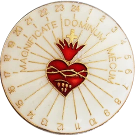
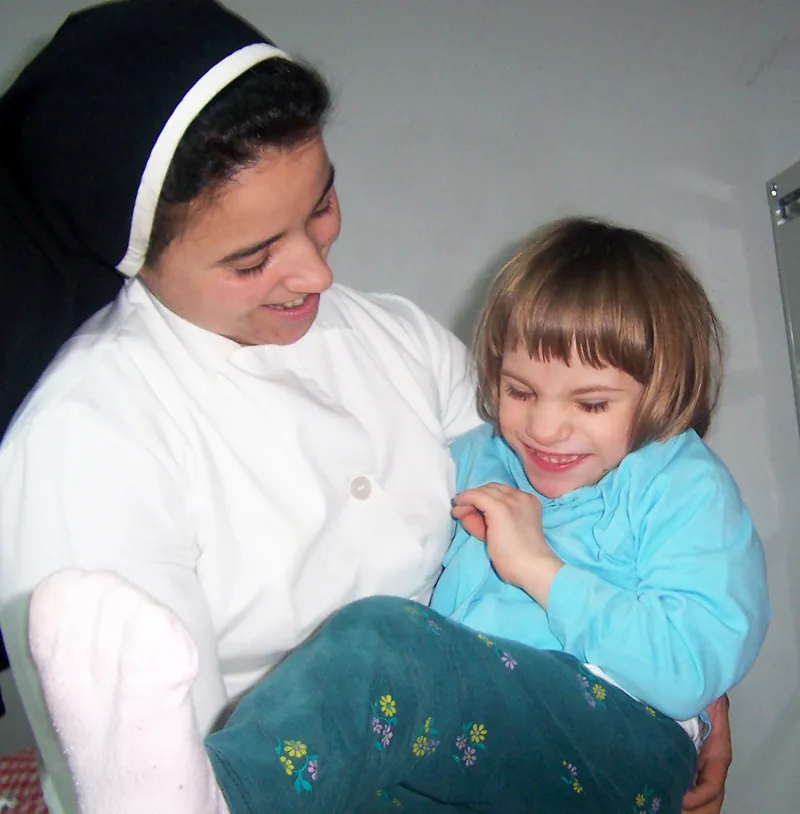
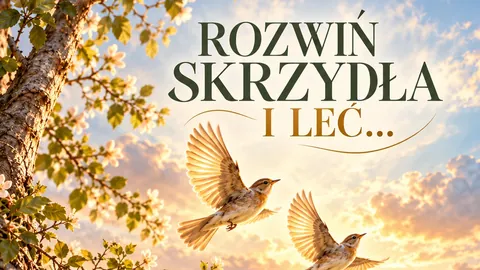
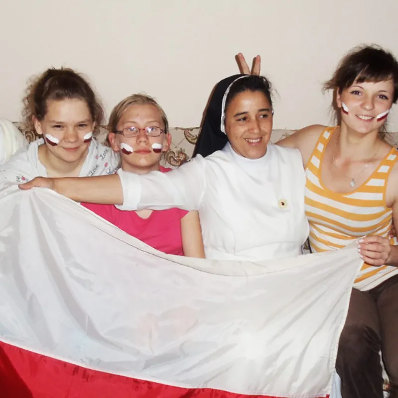
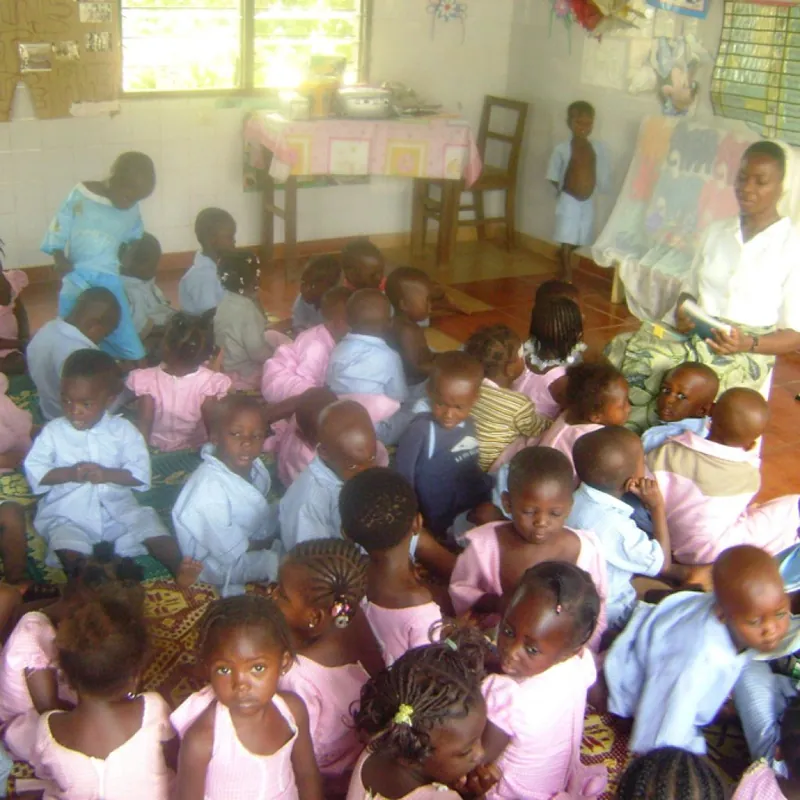

X Słów Boga - Dekalog życia
Dzień skupienia dla młodych (18+): warsztaty, Eucharystia, adoracja i rozmowy. Cykl zaczynamy od I i II przykazania.
21 listopada, 10:00-16:00, ul. Judyma 47

Wynagradzamy miłością: adoracją Najświętszego Sakramentu i codzienną opieką nad dziećmi w Rodzinnym Domu im. Serca Jezusa.
ul. Judyma 47, Lublin

Jesteśmy kobietami powołanymi i konsekrowanymi Bogu, które żyją charyzmatem wynagradzania przekazanym przez Ojca Założyciela, ks. Antonino Celonę. W Polsce wynagradzamy miłością: opieką i troską wobec dzieci, które z różnych przyczyn nie mogły jej zaznać we własnym domu.
Wszystkie nasze działania mają źródło w modlitwie kontemplacyjnej i adoracji Najświętszego Sakramentu. To jeden z głównych elementów naszego powołania.
Od 2000 roku prowadzimy w Lublinie całodobowy dom typu rodzinnego dla sześciorga dzieci pozbawionych opieki własnej rodziny.
Prowadzimy dni skupienia, rekolekcje i spotkania formacyjne dla młodzieży i młodych dorosłych, także z rozeznawaniem powołania.
„Świat nie kocha Jezusa, bo Go nie zna…”ks. Antonino Celona, Założyciel Zgromadzenia
Dni skupienia, wieczory modlitwy i wiadomości z naszego domu.
Dzień skupienia dla młodych (18+): warsztaty, Eucharystia, adoracja i rozmowy. Cykl zaczynamy od I i II przykazania.
21 listopada, 10:00-16:00, ul. Judyma 47
Wieczór uwielbienia, modlitwy wynagradzającej i zawierzenia w pierwszy piątek miesiąca.
6 listopada, pierwszy piątek

Każde dziecko potrzebuje korzeni i skrzydeł. Jedna z naszych wychowanek osiągnęła dorosłość i rozpoczęła samodzielne życie.
Dzień skupienia dla rodziców zastępczych i rodziców, którzy chcą pogłębić więź z Bogiem, z sobą i z drugim człowiekiem.
3 października, 10:00-15:00
Od początku Dzieło Wynagradzania łączyło siostry i osoby świeckie. Obok zgromadzenia powstało stowarzyszenie „Straż Honorowa”, by, jak pisał Ojciec Założyciel, „wynagradzać wszystkie obrazy i zniewagi” oraz upraszać łaski dla potrzebujących. Najprężniej działa we Włoszech, jest obecne także w Polsce.
To praktyczna forma naszego powołania wynagradzającego. Chcemy, żeby dzieci czuły się tu ważne, wartościowe i kochane przez Boga i ludzi, i żeby miały dom, do którego mogą wracać jak do własnych korzeni.
Jesteśmy całodobową placówką opiekuńczo-wychowawczą typu rodzinnego, współfinansowaną głównie przez Gminę Lublin. Dzięki Waszemu wsparciu nasi wychowankowie mogą lepiej się rozwijać. Bóg zapłać!
Ofiary na Rodzinny Dom Dziecka
Bank Pekao S.A., V Oddział w Lublinie
46 1240 1503 1111 0000 1753 2619
Film „Wynagrodzicielki NSJ - nasze codzienne życie” z naszego kanału.

W swoich planach na przyszłość uwzględnij wolę Bożą. Pytaj Boga, rozmawiaj z Nim, słuchaj. Rozeznawanie wymaga modlitwy i wsparcia doświadczonych osób, a odpowiedź, czy to małżeństwo, czy życie konsekrowane, powinna być świadoma, wolna i uczyniona z miłością.
Jeśli potrzebujesz pomocy albo masz pytania, napisz do nas. Zapraszamy też na dni skupienia z rozeznawaniem powołania.
Siostry pracują jako nauczycielki, katechetki, wychowawczynie i misjonarki, prowadzą grupy parafialne i wspólnoty, które żyją charyzmatem wynagradzania.
